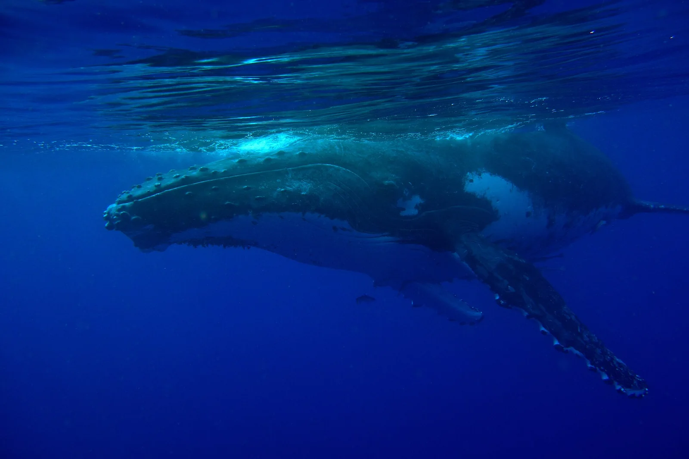

Vavaʻu
Tonga · snorkeling, kayak

Archipel où les baleines à bosse viennent mettre bas. L’un des rares endroits où l’on peut nager avec elles.
- Lieu
- Tonga
- Niveau
- Intermédiaire
- Activités
- snorkeling, kayak
- Type d'eau
- Mer / océan
- Coordonnées
- -18.65, -173.98 (position approximative du secteur)
Dangers à connaître
- Baleines : règles strictes.
- Houle au large.
Le conseil d'Ocean Buddy
Nage uniquement avec un opérateur agréé qui respecte les règles d’approche.
Ouvrir dans Ocean Buddy Télécharger sur l'App Store
Source : Fiche Ocean Buddy · septembre 2026 · à vérifier localement.